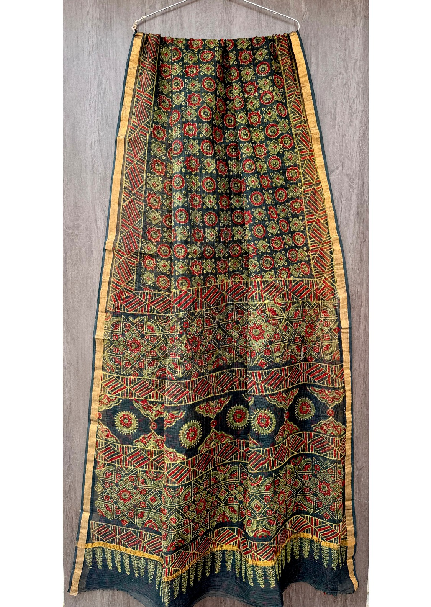

Elegance
Classic colors, refined motifs and silhouettes that can move from family gatherings to celebrations.
Our story
BJS Boutique is built for women who want beautiful Indian wear without the rush of a crowded shopping experience.

Quality first
Every collection at BJS Boutique is selected with attention to quality and graceful detailing. The focus is not on volume; it is on helping each customer find pieces that feel elegant, comfortable and appropriate for the moment.
From festive sarees to jewellery styling, kurties and suits, the boutique brings together Indian craftsmanship and practical everyday wearability.
What we value
Classic colors, refined motifs and silhouettes that can move from family gatherings to celebrations.
Traditional textile details, borders, prints and finishes are treated as the heart of each piece.
Shop with product codes online, then message or visit for styling help and availability checks.